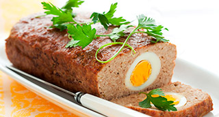

Pan de carne asado con crema de Xató y brocheta de tomates lacados y romero
"Como convertir una humilde carne picada en un plato de fiesta, versatil y abierto a la imaginación"

| Muslos de pollo | 4 un. |
| Butifarra o carne picada | 150 gr. |
| Miga de pan | 1 un. |
| Leche | 25 ml. |
| Yema de huevo | 1 un. |
| Pistachos pelados | 30 gr. |
| Cava | 80 ml. |
| Aceite de oliva | 40 ml. |
| 4 especias | 1 cc. |
| Sal | 8 gr. |
 |
|
| Cebolla | 1 un. |
| Zanahoria | 1 un. |
| Puerro | 1 un. |
| Apio rama | 1 un. |
| Tomate meduro | 1 un. |
| Dientes de ajo | 4 un. |
| Ramillete de hierbas | 1 un. |
| Aceite de oliva | 75 ml. |
| Cava | 150 ml. |
| Caldo | 500 ml. |
| Sal | 4 gr. |
|
|
| Uvas | 200 gr. |
| Cava | 100 ml. |
| Mantequilla | 40 gr. |
| Nata líquida | 100 ml. |
| Nuez moscada | 1/4 cc. |
| Sal | 1 gr. |
|
|
| Tomillo fresco | 4 ramitas |
- Precalentar el horno a 170º.
- Deshuesar los muslos de pollo reservando los huesos.
- Salpimentar y marinar unos minutos con un poco de cava.
- Remojar el pan con la leche.
- Cortar las verduras en mírepoix (bresa), separando los tomates del resto.
- Mientras está marinado el pollo, preparamos el relleno.
- En un bol colocar la carne picada, el pan escurrido, la yema de huevo la sal y las 4 especies. Mezclar bien.
- Pelar las uvas y reservarlas.
- Ponemos los huesos de pollo a dorar en una bandeja engrasada en el horno. Dejar que adquieran un tono dorado aprox. 10'.
- Una vez dorados retiramos del horno y desglosamos con un chorro de cava.
- En una cazuela con un poco de aceite sofreímos sin que tomen color las verduras (excepto tomates), los ajos y el ramillete.
- Añádir los tomates rehogar 5' e incorporar los huesos con el glaseado de cava.
- Cubrir con el caldo, tapar la cazuela y dejar hervir lentamente 15'. Pasar por un chino.
- Extender sobre la tabla una hoja de papel de aluminio, pintar el centro con el aceite y salpimentar.
- Disponer en el centro el muslo de pollo, colocar una pequeña capa de relleno y los pistachos.
- Enrollar dándole forma de cilindro, apretar bien y fijar bien por los lados para que mantenga la forma y no escape el relleno.
- Colocar en una bandeja, introducir en el horno y cocer 25'.
- Retírar el papel de aluminio con cuidado de no quemarse. Volver a poner en el horno y dejar dorar unos 15' más.
- Retírar y reservar al calor. Acabado/Presentación
- Poner a reducir la las colada hasta alcanzar consistencia de napado.
- En una sartén con una nuez de mantequilla, saltear las uvas peladas, añadir un chorro de cava y dejar reducir a la mitad
- Mezclar las uvas con el fondo reducido. Rectificar de sal.
- A partir de este momento podemos derivar a una salsa más cremosa añadiéndole nata y dejando reducir 1'.
- Colocar en el centro del plato el pollo relleno, (entero o partido al biés) y disponer la salsa con las uvas alrededor.
- Decorar con tomillo fresco y servir inmediatamente.